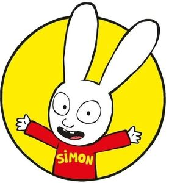

Trade Mark Journal No.2025/029 18 July 2025
WO0000001850831 (3,14,20,29,30)
Office of origin: European Union Intellectual Property Office (EUIPO)
Date of International Registration:31 January 2025
Date of designation in the UK:
31 January 2025

The mark contains the colours yellow "Pantone Process Yellow C", red "Pantone 185 C", black "Pantone Black 6 C" and white
- Class 3
- Laundry preparations; cleaning preparations; polishing preparations; degreasing preparations; abrasive preparations; soaps; perfumes; household perfumes; perfumed sachets; air fragrances; perfumes for motor vehicles; eaux de toilette; essential oils; cosmetics; lotions for hair; dentifrices; depilatories; depilatory creams; depilatory lotions; make-up removing products; lipstick; beauty masks; shaving products; preservatives for leather (polishes); creams for leather; shampoos; hair-conditioning products; cosmetic masks; hair masks; make-up; make-up powders; make-up pencils; make-up base; special make-up for shows; make-up palettes containing cosmetics; eye make-up products; deodorants and antiperspirants; suntan creams; cosmetic creams; shower gels; shower creams; non-medicated shower oils; bath foams; bath crystals; bath salts not for medical use; massage oils and lotions; body lotions; body creams; body mists; body masks; hair colorants; hair bleaches; hair sprays; oils for hair; hair wax; serums for hair care; beard care products; potpourris [fragrances]; incense.
- Class 14
- Jewelry ("joaillerie"); jewelry; finger rings [jewelry]; necklaces [jewelry]; bracelets [jewelry]; earrings; piercing rings; precious stones; timepieces and chronometric instruments; precious metals and alloys thereof; works of art of precious metal; jewelry cases; boxes of precious metal; watch cases; watch bands; watch chains; watch springs; watch glasses; watches; key rings (split rings with trinket or decorative fob); key rings (trinkets or fobs); statues of precious metal; figurines (statuettes) of precious metal; cases for timepieces; presentation cases for timepieces; medals; medallions; chronometers; ornamental lapel pins; clock radios.
- Class 20
- Furniture; mirrors (looking glasses); picture frames; works of art of wood, wax, plaster or plastic; clothes hangers; chests of drawers; cushions; shelves; packaging containers of plastic materials; armchairs; seats; bedding except linen; mattresses; plate racks; boxes of wood or plastic materials; mobiles [decoration]; dream catchers [decoration]; wall decorations of wood; decorative baskets of wicker; wind chimes (decoration); ornamental scale models of wood.
- Class 29
- Meat; fish; poultry; game; preserved fruit; frozen fruits; dry fruits; cooked fruits; preserved vegetables; deep-frozen vegetables; dried vegetables; cooked vegetables; jellies; jams; compotes; eggs; milk; dairy products; oils for food; butter; charcuterie; salted meats; crustaceans, not live; shellfish, not live; edible insects, not live; canned meat; canned fish; canned fruits; canned vegetables; cheeses; milk beverages with milk predominating; meat extracts; edible oils and fats; fats for food; tofu; flavored yogurts; drinking yogurts; yogurt-based desserts; yogurt-based beverages; pudding-type yogurts; fruit desserts.
- Class 30
- Coffee; tea; cocoa; sugar; rice; tapioca; flour; cereal preparations; bread; pastries; confectionery products; edible ices; honey; agave syrup (natural sweetener); yeast; salt; mustard; vinegar; sauces (condiments); spices; ice for refreshment; sandwiches; pizzas; pancakes; cookies (biscuits); cakes; rusks; sugar confectionery; chocolate; cocoa-based beverages; coffee-based beverages; tea-based beverages; golden syrup; baking powder; pasta; deep-frozen doughs; fresh pasta; wholemeal pasta; bread doughs; lollipops [confectionery]; pastilles [confectionery]; chocolate-flavored confectionery; fruit confectionery; frozen confectionery; prepared desserts [confectionery]; ice cream; frozen yogurts; sherbets [ices]; cereal bars and energy bars; crackers.
Stephanie Aune
GO-N PRODUCTIONS
Representative: Plasseraud IP, 104 rue de Richelieu, F-75002 Paris, FRANCE